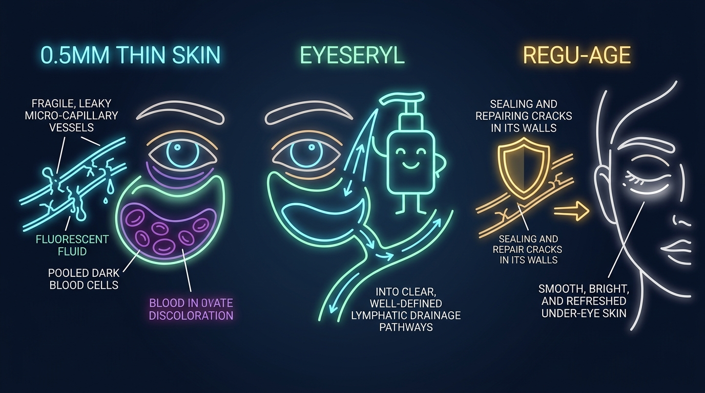

El Acuario de Cristal Fino y la Bomba de Microdrenaje
Comparación entre la acumulación vascular en piel de 0,5 mm y el microdrenaje peptídico.

Muchas personas se miran al espejo cada mañana y notan sombras oscuras y bolsas hinchadas bajo sus ojos. La mayoría cree que estas ojeras son pigmento cutáneo causado por falta de sueño. La investigación dermatológica demuestra que esta creencia es errónea.
La piel del contorno ocular posee una estructura biológica única. Las cremas blanqueadoras tradicionales no solucionan las ojeras. Tratar las ojeras con blanqueadores es como pintar el cristal de un acuario cuando el agua interior está turbia.
Este estudio clínico explica por qué la piel periocular responde de modo distinto, por qué las ojeras se ven moradas o azuladas y cómo los péptidos vasculares restauran una circulación limpia.
1. La Barrera de 0,5 Milímetros y 20.000 Parpadeos Diarios
El grosor de la piel varía en cada zona del cuerpo humano. La piel de las plantas de los pies puede alcanzar hasta 4,0 milímetros de espesor. En contraste, la piel bajo los ojos solo mide 0,5 milímetros. Es similar al grosor de tres hojas de papel. Es la piel más fina de todo el cuerpo.
Esta zona carece además de dos barreras biológicas protectoras esenciales:
- Cero Grasa Subcutánea: Casi no hay almohadilla adiposa bajo la piel periocular para ocultar la red venosa.
- Cero Glándulas Sebáceas: El contorno de ojos apenas produce lípidos naturales. Se deshidrata y pierde flexibilidad con rapidez.
Al mismo tiempo, este tejido fino trabaja intensamente. Una persona parpadea entre 15.000 y 20.000 veces al día. El músculo circular (orbicularis oculi) se contrae más de 7,3 millones de veces al año. Este movimiento constante fatiga los microvasos sanguíneos bajo la delgada dermis.
2. El Efecto Tyndall: Por Qué las Ojeras Se Ven Azules y Moradas
Si las ojeras fueran melanina marrón, los despigmentantes cosméticos serían efectivos. Sin embargo, más del 80% de las ojeras son de origen vascular, no pigmentario.
Bajo esta piel de 0,5 mm existe una red densa de microcapilares. Estos vasos microscópicos son muy frágiles. Cuando se debilitan, los glóbulos rojos escapan hacia el espacio extracelular circundante.
Al salir del capilar, los glóbulos rojos pierden su oxígeno. La hemoglobina desoxigenada adquiere un tono rojo oscuro o violáceo. Como la piel superior es tan delgada y translúcida, la luz la atraviesa y rebota en estos glóbulos acumulados.
Esta dispersión de luz sigue un fenómeno físico llamado Efecto Tyndall. Las ondas de luz roja cruzan el tejido, mientras que las ondas azules cortas rebotan hacia los ojos del observador. Por eso, la sangre estancada bajo la piel se percibe azul o morada.
3. La Balsa Matutina: Un Sistema de Drenaje Sin Bomba Mecánica
¿Por qué las bolsas bajo los ojos se ven más hinchadas al levantarse por la mañana?
El cuerpo elimina el exceso de agua y desechos celulares a través del sistema linfático. A diferencia del sistema circulatorio, que utiliza el corazón como motor, el sistema linfático no posee bomba. Depende de la gravedad y del movimiento físico corporal para movilizar los fluidos.
Durante el día, la gravedad favorece el descenso de líquidos hacia el torso. Al dormir acostado en posición horizontal durante ocho horas, la gravedad deja de ayudar. Los fluidos se filtran a través de los capilares permeables y se acumulan en el tejido periocular laxo.
Al despertar, este líquido estancado genera un edema visible (bolsas). Sin un drenaje activo, la retención distiende la piel fina y degrada las fibras de colágeno a largo plazo.
Reparación de la Microcirculación, Directamente
El sistema de tetrapéptido Eyeseryl® y Regu-Age® descrito arriba es el activo de Eyelasticity™. Ataca el drenaje linfático que deja el efecto Tyndall, no la melanina.
Ver Descuento OficialGarantía de reembolso de 67 días • podemos recibir una comisión
4. Por Qué las Cremas Faciales Convencionales Fallan en Esta Zona
Aplicar cremas faciales espesas en el contorno periocular suele agravar la hinchazón:
- Riesgo de Quistes de Millium: Los aceites minerales densos y las parafinas obstruyen los microporos de la piel de 0,5 mm, formando pequeños quistes blancos.
- Mayor Retención Hídrica: Las cremas oclusivas retienen agua en el tejido laxo sin favorecer su drenaje, aumentando el volumen de las bolsas matutinas.
- Ausencia de Acción Vascular: Las cremas convencionales hidratan la epidermis superficial, pero no reparan paredes capilares ni activan la linfa.
Vía de Fuga Vascular
- 1. Los microcapilares frágiles filtran glóbulos rojos al tejido.
- 2. La hemoglobina desoxigenada se acumula bajo la piel de 0,5 mm.
- 3. El efecto Tyndall genera sombras oscuras azuladas y edema.
Vía de Microdrenaje Peptídico
- 1. Regu-Age® refuerza y sella las paredes de los capilares débiles.
- 2. Eyeseryl® estimula las microbombas de evacuación linfática.
- 3. El líquido estancado se drena, despejando ojeras e hinchazón.
| Parámetro Periocular | Péptidos Vasculares Dirigidos (Eyeseryl + Regu-Age) | Cremas Faciales Comunes (Lípidos Densos) |
|---|---|---|
| Penetración Tisular | Rápida Absorción Subdérmica (adaptada a 0,5 mm) | Oclusión Superficial (Demasiado densa para el área) |
| Drenaje Linfático | Evacuación Activa de Fluidos (reduce edema) | Nula (Sin efecto sobre el líquido acumulado) |
| Refuerzo Capilar | Fortalece Microvasos (frena fugas) | Nula (No repara uniones endoteliales) |
| Riesgo de Millium | Nulo (Fórmula acuosa y ligera) | Elevado (Aceites minerales taponan poros finos) |
| Objetivo Primario | Microcirculación, fugas capilares y retención linfática | Hidratación de la superficie epidérmica |
5. La Solución Clínica: Eyeseryl® Tetrapéptido y Regu-Age®
La bioquímica cosmética moderna ha desarrollado péptidos dirigidos a resolver la raíz fisiológica de las ojeras:
- Eyeseryl® (Acetil Tetrapéptido-5): Este péptido estimula la contracción de los microvasos linfáticos perioculares. En ensayos clínicos en humanos, Eyeseryl redujo el volumen de las bolsas hasta en un 70% en 15 a 28 días al drenar líquidos intersticiales retenidos.
- Regu-Age® (Péptidos de Soja y Arroz con Óxido-Reductasas): Este complejo refuerza las células endoteliales de los capilares. Los ensayos clínicos demuestran que Regu-Age reduce la permeabilidad capilar en un 33%, impidiendo la salida de glóbulos rojos al tejido dérmico.
- Pro-Coll-One+®: Obtenido de glicopéptidos de soja, estimula la síntesis de colágeno Tipo I en fibroblastos hasta en un 1190%. Densifica la dermis de 0,5 mm para que las venas subyacentes dejen de transparentarse.
Este complejo de triple acción constituye la base clínica de Eyelasticity™ Age-Defying Eye Therapy. Al sellar capilares, evacuar linfa acumulada y engrosar la dermis, disipa sombras y bolsas sin provocar irritación.
Ojeras Más Claras, Garantía de 67 Días
Una fórmula específica en lugar de una crema facial genérica. Con garantía de reembolso de 67 días.
Ver Descuento OficialGarantía de reembolso de 67 días • podemos recibir una comisión
6. Preguntas Frecuentes
La piel bajo los ojos solo mide 0,5 milímetros y carece de tejido graso subcutáneo. Cuando los microcapilares frágiles tienen fugas, la sangre desoxigenada se acumula en el tejido. Debido al efecto Tyndall, la luz se dispersa en la piel translúcida y refleja tonos azules y violetas, no pigmento de melanina.
No. Las cremas faciales pesadas contienen lípidos densos que permanecen en la superficie sin penetrar la fina piel periorbital, pudiendo obstruir poros y generar millium. Las bolsas requieren péptidos vasculares específicos como Eyeseryl y Regu-Age para sellar capilares y acelerar el drenaje linfático.
Restaura la Microcirculación Periocular
Fórmula avanzada en Eyelasticity™ con Eyeseryl®, Regu-Age® y garantía de satisfacción de 67 días sin riesgo.
Visitar Tienda Oficial de Eyelasticity